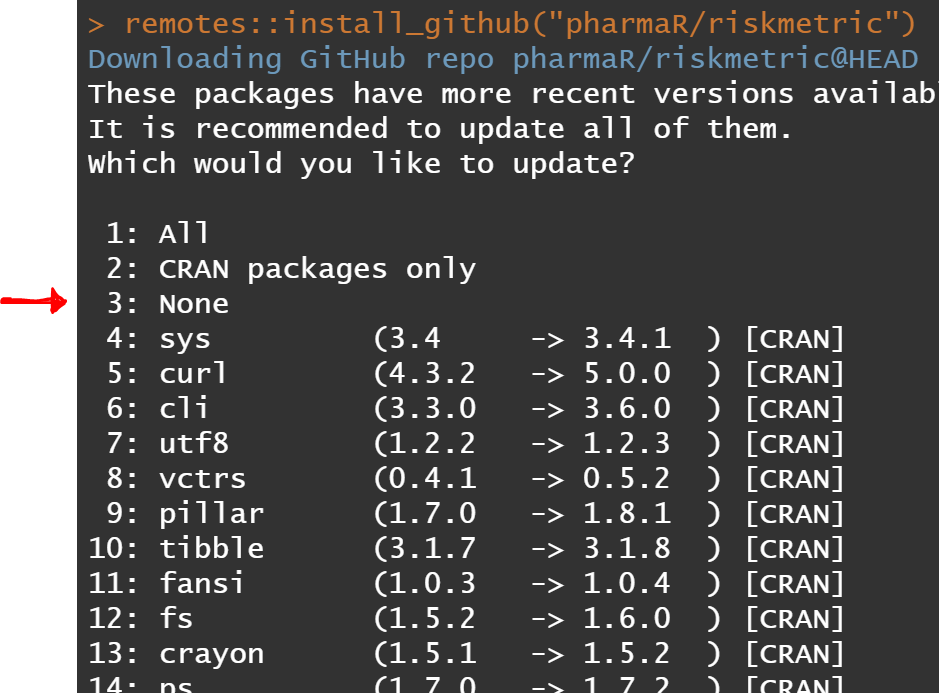

Overview
The renv package provides project-local R dependency
management to your projects. It helps manage library paths (and other
project-specific state) to help isolate your project’s R dependencies.
The renv package helps you create
reproducible environments for your R
projects. It will make your R packages more isolated,
portable and reproducible.
Actions performed only once in the repo
First someone initialized a new project-local environment with a
private R library - which can be done via renv::init().
This action will result in the creation of a lockfile - named
renv.lock in the root directory. The lock file contains a
ton of environment metadata, including the developers installed packages
& versions, plus the repository source where those packages were
installed from (i.e. CRAN, GitHub, RSPM, etc). It’s important to note
that this dev team will use a repo source that does not point at
production CRAN, because we want a stable (aka unchanging) source for
pkgs. In addition, the lockfile should (and will) only be
upgraded if there is a need for an important new feature that relies on
the latest version of a new or existing pkg in the lock file.
Each developer working within the repo for the first time will need
sync up with with the packages stored in the renv.lock
file. The first time you do this, you’ll need to run
renv::activate() which will ask for you to confirm you
decision. Note that these new pkg installations will only impact this R
project, and not your R system library stored elsewhere.
If new packages installations are needed
As new dependencies are needed, you can save the current state of the
project library with renv::snapshot(). However, any pkg
changes must be expressly documented and justified in the PR’s comments
section to be considered ready for review. Without them, the reviewer
should reject & request changes to the PR immediately. This dev
team’s philosophy is that the renv.lock file should (and
will) only be upgraded if there is a need for an important new
feature/functionality that relies on a different version of a new or
existing pkg. Even when updating a pkg, R will sometimes ask if you want
to upgrade other packages, as seen below. You should always say “3:
None” where possible.

If you just want to test a new package out before committing it to
the lockfile, you can do that too. Go ahead and install the package of
interest and if you want to revert back to the pkg line up stored in the
lock file at anytime, just run renv::restore(). Similarly,
anytime your fellow developer(s) submit a PR with a change in the lock
file, you’ll need to run renv::restore() to sync up your
development with the rest of the team.
If at any time your out of sync the renv.lock file, you
can run renv::status() to see which packages are ahead or
behind the lock file.
How to ignore files & pkgs in the lock file
By default renv ignores all files stated in the
.gitignore file. If you want to extend that further, you
can use a .renvignore file - which is specified similar to
the .gitignore file.
In addition, you can ignore package that renv thinks you
need to add to the lock file using the following command:
renv::settings$ignored.packages("<<package name>>")